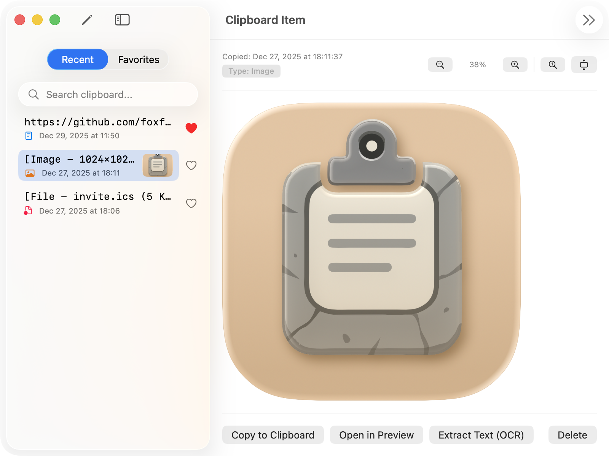
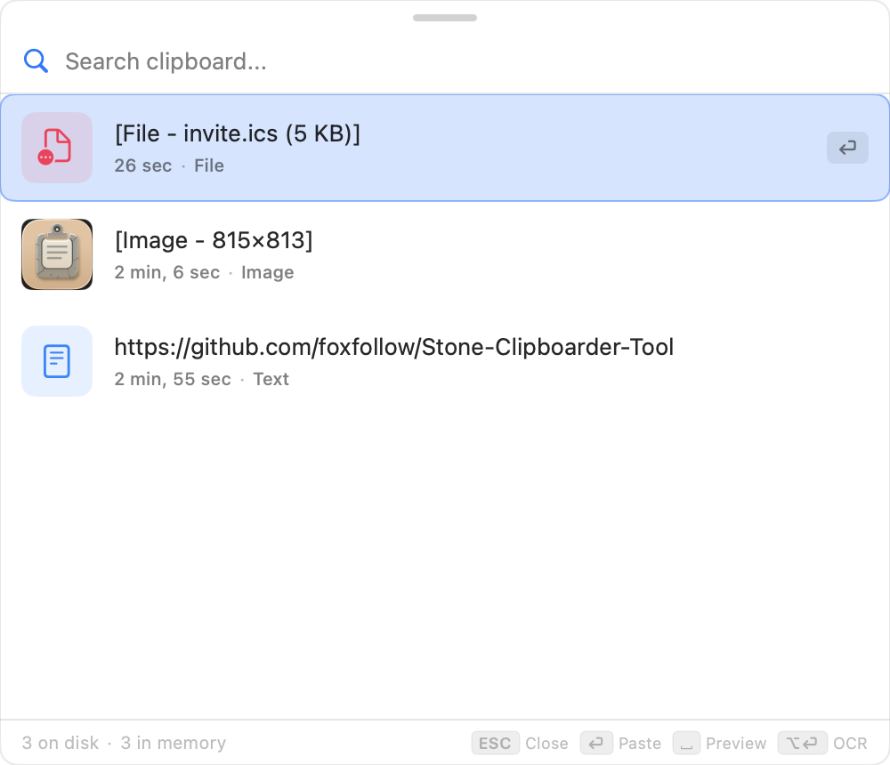
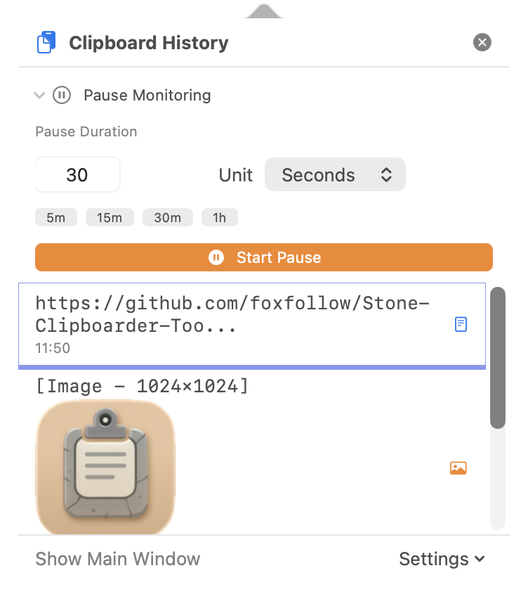

Безкоштовно · Відкритий код · macOS 15+
Більше не втрачай скопійоване.
Безкоштовний менеджер історії буфера обміну для macOS з відкритим кодом. OCR, глобальні гарячі клавіші та повна приватність.
Огляд застосунку
Ідеально вписується у ваш робочий процес macOS.



Встановлення через Homebrew
Найпростіший спосіб встановити та оновлювати.
brew tap foxfollow/stonebrew install stone-clipboarder-tool
Все що вам потрібно
Потужні функції, безкоштовно, повна приватність.
Чому обрати Stone Clipboarder?
Більше функцій. Безкоштовно. Без компромісів.
| Функція | Stone Clipboarder | Платні альтернативи | Безкоштовні альтернативи |
|---|---|---|---|
| Ціна | Безкоштовно | $20+/рік | Безкоштовно |
| Відкритий код | Іноді | ||
| OCR | |||
| Приватність | Хмарна синхронізація | Хмарна синхронізація | |
| Гарячі клавіші | Обмежено | ||
| Виключення застосунків | Іноді | ||
| Нативний macOS |